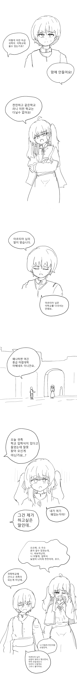
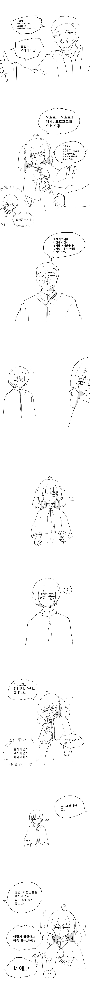
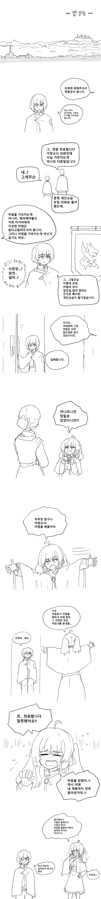
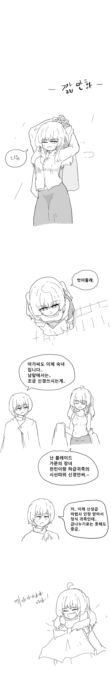

    https://m.dcinside.com/board/cartoon/729561 사슴컴퓨터
댓글
수집 당시 댓글 21개
차돌된장국 · 6 시간 전
게살버거비법 · 6 시간 전
예상을 벗어나지 않은 맛이지만 그렇기 때문에 안심하고 먹을 수 있습니다
참다랑어 · 6 시간 전
빨리... 정략결혼에 눈 돌아간 배불뚝이 대머리 귀족을 수배해야..!
번육개장먹는사람 · 6 시간 전
질문자주합니다 · 5 시간 전
대려다, 대려주셔서
먼데...
· G군 · 5 시간 전
몇일
· OヮO · 3 시간 전
어떻게
영포티 · 5 시간 전
복숭아먹기 · 5 시간 전
간만에 특식이군
카린쨩발바닥핥짝 · 5 시간 전
이거 그린 작가놈 맞춤법 보니 악역영애랑 동급임
· 익명
맞춤법 유명하긴 하지
· 고냥귀고냥 · 5 시간 전
몇일씀연웨않되?
· 쮸보봅 · 5 시간 전
이거땜에다시가입 · 5 시간 전
이거이거이거ㅋㅋㅋㅋ
인생겜하러옴 · 5 시간 전
시슴...시슴을 조심하십시오...
· 민트맛초꼬튀김 · 4 시간 전
이작가 노루컴퓨터라고 놀렸다가 놀리는거 모르고 진짜 탈갤할뻔했잖아 ㅋㅋㅋㅋ
· OㅅO짱킹갓존재OㅁO · 3 시간 전
개귀엽네 ㅋㅋㅋㅋㅋ
스탈린 · 4 시간 전
감자 · 4 시간 전
Illumina · 3 시간 전
어흐어흐
샤아킥 · 20 분 전